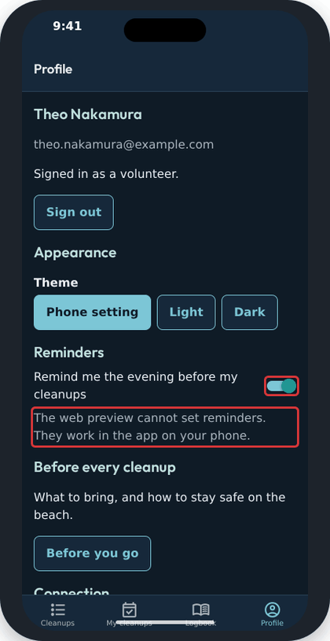

🔔 Lesson 6.4: Notifications
A volunteer who signs up for Saturday's cleanup on a Tuesday has four days to forget it. Today Shoreline Crew remembers for them: the evening before each cleanup they have a spot at, the phone itself shows a short reminder with the time and the meeting point, and one tap opens the cleanup. No server sends it, no signal is needed, and a cancelled sign-up takes its reminder with it. You will also look honestly at the other kind of notification, the kind a server pushes, and at everything it would take.
🎯 Learning Objectives
By the end of this lesson, you will be able to:
- Tell local notifications from push notifications and choose between them: what each needs, what each can do, and why Shoreline Crew's reminders are local
- Put notifications through Lesson 6.1's permission step with a Hook made by
createPermissionHook, including Android's channels and the iPhone's question - Schedule, replace and cancel reminders with expo-notifications, and keep them in step with the server's sign-ups in one function that is safe to run at any time
- Open the right screen from a tap on a notification, whether the app was running or not, and treat the notification's data as outside input
- Say what server push would need (a development build, an EAS project, credentials, push tokens and a server), and what Expo Go and the web preview can and cannot show
📦 Code for this lesson
Starting code: lesson-23-start.zip · Finished code: lesson-23-end.zip. Each folder has a README with the commands to run it.
In This Lesson
👋 Welcome: Remembering for the Crew
If you did last lesson's "Before the Next Lesson" task, you looked at two apps in your phone's notification settings: one whose reminders you like and one you have silenced. The difference is rarely the technology. The good one speaks when it has something useful to say, at a sensible time, and lets you turn it off; the silenced one interrupted you once too often. Every app that sends notifications is one bad evening away from that switch.
Shoreline Crew has a real reason to speak: people forget. A reminder the evening before ("Tomorrow: Weekend Cove Cleanup, 09:00 to 11:30. Meet at Top of the Cove Lane stairs.") turns a sign-up into a volunteer on the beach. By the end of the lesson:
- Reminders are opt-in. A switch on the Profile tab, and the phone's question only after the volunteer turns it on, through the permission step you built in Lesson 6.1.
- Reminders follow the sign-ups. Sign up, and a reminder is set; cancel, and it is gone; sign out, and the next person does not get yours. One function makes the phone's reminders match the server's sign-ups, and it is safe to run as often as you like.
- A tap opens the cleanup, through the same path as the links you made in Lesson 4.4, whether the app was open or closed.
- You know what push would take. Reminders from a server (a cancelled cleanup, a spot that opened up) need more than code, and the course does not ship it: you will see exactly why, and what it would cost.
Why it matters for your work: notifications are where an app reaches into someone's day uninvited. Teams that get them right keep their users; teams that do not watch their "notifications off" numbers climb and never get them back. They are also full of traps that only show on a device: a reminder that never fires, one that fires for someone who cancelled, a tap that opens the wrong screen. You will design those out today.
🌱 The part you cannot see from your desk
A notification is drawn by the phone, outside your app, at a time you chose days ago. The web preview cannot show one at all, so this lesson leans on Expo Go on your phone, on reading the library's source, and on a test reminder that arrives ten seconds after you press a button. If a reminder does not appear the first time, that is a clue, not a failure: the permission, the channel, the time and the Do Not Disturb setting are each worth checking, and you will know where to look.
📬 Local or Push?
On the web, a page can show a notification while it is open, and a service worker can receive pushes from a server. Phones have the same two ideas, and they are worth keeping apart, because they need very different things:
| Local notification | Push notification | |
|---|---|---|
| Who decides to send it | The app, on the phone, ahead of time | A server, whenever something happens |
| Who delivers it | The phone's own scheduler, even with the app closed | Apple's (APNs) or Google's (FCM) push service, over the internet |
| Needs a signal at that moment | No | Yes |
| Needs a server and accounts | No | Yes: your server, credentials for both push services, a token per device |
| Expo Go | Works | Not on Android (since SDK 53); a development build is the way |
| Good for | Things known in advance: a reminder before a cleanup | Things decided elsewhere: the organizer cancelled, a spot opened up |
A reminder the evening before a cleanup is known the moment the volunteer signs up: the date and time are in the sign-up. Nothing needs to travel at 6 pm, so a local notification does the job with no server, no account and no signal on the beach road. That is why Shoreline Crew's reminders are local, and why this lesson can be built and run in Expo Go today.
The left side is today's project. The right side is what a push would add: a server deciding, and a push service in between. Both end the same way, a notification on the phone and a tap that opens a screen, which is why the tap handling you write today would serve push too.
💡 Mental model: the tide table on the van's dashboard
Before a season, the crew copies the tide times onto a card taped to the van's dashboard. Nobody needs a signal to read it at dawn, and it is always there. But if a time changes, someone has to copy the card again, or the van arrives at high water. A local reminder is that card: written ahead, read with no signal, and only as true as the last time you copied it, which is why the app copies again whenever the sign-ups change. A push notification is the harbor radio: someone at the station speaks when something changes, but you need a radio, a station, and a license to broadcast.
🙋 Asking to Notify
Lesson 6.1 said notifications need a yes "on iPhone and on recent Android versions". Here is the detail, from Apple's, Google's and Expo's documentation:
| iPhone | Android 13 and later | Android 12 and earlier | Web preview (Chrome) | |
|---|---|---|---|---|
| Needs a yes | Yes, before any notification shows | Yes (the POST_NOTIFICATIONS permission) | No: on unless turned off in Settings | Yes: the browser's own question for the site |
| After one no | Blocked: only Settings can change it | Asks once more, then blocked (like location) | Blocked | |
| Extra | The app chooses what it asks for: alerts, sounds, badges | Notifications belong to channels the person can tune one by one | Channels too (Android 8 and later) | Asking works; scheduling does not (below) |
The answers come back in the same PermissionResponse shape as location and the camera, so Lesson 6.1's permissionStep and PermissionGate work unchanged. The one thing missing is the Hook: expo-notifications has getPermissionsAsync and requestPermissionsAsync, but no useNotificationPermissions. As Lesson 6.1's FAQ said, createPermissionHook, exported by expo, makes one from those two functions; it is the same helper the other Expo modules use to make theirs:
import { createPermissionHook } from 'expo';
import * as Notifications from 'expo-notifications';
// Reads on mount, asks only when you call the second item: the same three-item tuple as
// Location.useForegroundPermissions(), so usePermission() from Lesson 6.1 takes it as it is
export const useNotificationPermissions = createPermissionHook({
getMethod: Notifications.getPermissionsAsync,
requestMethod: Notifications.requestPermissionsAsync,
});Shoreline Crew's version (Step 3) replaces requestMethod with a small function of its own, for two reasons:
- Android's channel comes first. Every notification on Android 8 and later belongs to a channel ("Cleanup reminders"), and the person can turn each channel off or make it silent in Settings. Expo's documentation says Android 13 and later only show the permission question once the app has created a channel, so the app creates it, then asks.
- Ask only for what you use. By default,
requestPermissionsAsync()asks an iPhone for alerts, sounds and badges (read in the module's iOS code: no options means all three). Shoreline Crew never puts a number on its icon, so it asks for alerts and sounds only.
And the moment? The farm gate rule from Lesson 6.1: ask when the volunteer does the thing that needs it. For reminders, that thing is turning on a Remind me the evening before my cleanups switch. Until then, nothing asks, and the setting starts off.
What the web preview does
Reading node_modules/expo-notifications/build/ shows what each part does on the web, and the web preview confirmed it (measured):
- Permissions work: the web version uses the browser's own
Notificationpermission, so Continue shows Chrome's notification bubble, and the answer maps to the same steps (a browser "Block" is final, so the gate shows the blocked face). - Scheduling does not: the web scheduler module is empty, so
scheduleNotificationAsyncand its friends throw an "is not available on web" error (UnavailabilityError). The app checksPlatform.OSfirst and tells the volunteer where reminders really happen. - Listeners do nothing, and say so: the browser console shows a warning from expo-notifications when the app loads ("Listening to push token changes is not yet fully supported on web. Adding a listener will have no effect."). It is harmless; it comes from the library, not from your code.
📱 On your phone
In Expo Go, the question names Expo Go, not Shoreline Crew (Lesson 6.1's table), and the library prints a warning when the app starts: "expo-notifications functionality is not fully supported in Expo Go", with a suggestion to use a development build (read in its source). On an Android phone, a second warning says push notifications are unavailable in Expo Go since SDK 53 and that local notifications remain available. Both are expected: local reminders are all this lesson uses. The questions, channels and warnings could not be run here (no phone, no Android emulator on this course's machine); Step 7 has you check them.
⏰ Reminders That Stay True
A local notification is a request handed to the phone: what to show (the content), when (the trigger), and a name for it (the identifier):
import * as Notifications from 'expo-notifications';
await Notifications.scheduleNotificationAsync({
identifier: 'reminder-e08', // yours to choose; the same id again replaces this one
content: {
title: 'Tomorrow: Weekend Cove Cleanup',
body: '09:00 to 11:30. Meet at Top of the Cove Lane stairs.',
data: { url: '/cleanups/e08' }, // anything your app needs when it is tapped
},
trigger: {
type: Notifications.SchedulableTriggerInputTypes.DATE,
date: new Date('2026-12-05T18:00'), // an example; the app works it out from the cleanup
},
});The trigger's type says what kind of time it is. The ones you are most likely to need:
| Trigger type | Fires | Example |
|---|---|---|
DATE | Once, at a moment | 6 pm the evening before a cleanup (Shoreline Crew) |
TIME_INTERVAL | After a number of seconds (optionally again and again) | The test reminder in 10 seconds (Step 7) |
DAILY, WEEKLY | At a time every day or week | "Log your week's pickups", every Sunday at 7 pm |
null | At once | Rarely: something on screen usually says it better |
Once scheduled, the reminder belongs to the phone. The app can be closed, the phone can lose its signal, and at 6 pm the notification appears anyway. That is the strength of a local notification, and also its weakness: the phone does not know that the volunteer cancelled on another device, or that the organizer moved the start time. The tide table on the dashboard is only as true as the last copy.
So Shoreline Crew does not think in terms of "schedule on sign-up, cancel on cancel". It has one function, updateReminders, that looks at the truth (the server's sign-ups, Lesson 5.2's cached query) and makes the phone match it:
- Work out which cleanups should have a reminder: the volunteer is signed in, has reminders on and allowed, holds a confirmed spot (the waiting list gets none), and the reminder time is still ahead.
- Ask the phone which reminders it holds (
getAllScheduledNotificationsAsync) and cancel each of Shoreline Crew's that is no longer wanted (cancelScheduledNotificationAsync). - Schedule every wanted one with the identifier
reminder-plus the cleanup's id. Scheduling an identifier the phone already has replaces that reminder, so a cleanup whose time changed gets the new time.
Run it twice and nothing changes the second time; run it after any change and the phone ends up right. That is the same idea as Lesson 5.5's clientIds: when an operation can safely run more than once, you can run it whenever something might have changed, without bookkeeping. The app calls it when it starts, when someone signs in or out, when the switch changes, when it comes back to the foreground, and after every sign-up or cancellation.
Measured in the web preview with a stand-in for the phone's scheduler (the real one does not exist on the web; the stand-in kept the requests in memory so the app's own logic could run): signed in as Theo with reminders on, the app scheduled four reminders, one for each confirmed cleanup still ahead (none for today's cleanup, whose evening-before has passed, and none for his cancelled one); cancelling Family Beach Morning removed its reminder and left the others; signing up again brought it back; turning the switch off, or signing out, left none.
📱 On your phone
When the phone delivers is up to the phone. Reading expo-notifications' Android code: without the "exact alarm" permission, which Shoreline Crew does not ask for, Android 12 and later may deliver a little late to save battery; for "this evening", that is fine. An iPhone keeps up to 64 scheduled notifications per app (Apple's documentation); Shoreline Crew holds one per upcoming cleanup. Do Not Disturb, Focus modes and a channel turned off in Settings can all keep a reminder quiet. None of this can be seen in the web preview.
👆 A Tap That Opens a Cleanup
A reminder nobody can act on is half a feature. When the volunteer taps it, Shoreline Crew should open that cleanup's screen, with its map and its Check in button. There are two moments to handle:
| The app was… | What the app sees | expo-notifications |
|---|---|---|
| Running (open, or in the background) | An event, at the moment of the tap | addNotificationResponseReceivedListener |
| Not running: the tap started it | Nothing yet: the tap happened before your code was loaded | getLastNotificationResponse(), read once at startup |
A "response" is the notification plus what the person did with it; the reminder's content.data rides along. Shoreline Crew put a path there, /cleanups/e08, the same path a link from Lesson 4.4 opens (shorelinecrew://cleanups/e08 is that path with the scheme in front). Opening it is one call: router.push(path). And because the root layout keeps the tabs underneath (Lesson 4.4's anchor), a reminder opened from a closed app has a back button that leads to the Cleanups tab. Measured in the web preview with the stand-in: a "tap that started the app" opened the cleanup with Go back and the tabs underneath; a tap while the app was open pushed the cleanup over the Profile tab.
Two rules keep it safe:
- Data from a notification is outside input. Today the app writes it, but the same handler would read a server's push tomorrow, and TypeScript types
content.data's values asunknownfor a reason (see Common Mistakes). Check it with a type guard, as you check the API's answers, and only accept a path to a cleanup. Measured: a web address,/sign-in, a path with..in it and a number were all ignored, and the app stayed where it was. - A notification only opens a screen, like a link (Lesson 4.4). It never signs up, cancels or checks in by itself. A tap is not a decision.
To test where a tap leads without waiting for a notification, use Lesson 4.4's commands: the reminder and the link open the same path, so npx uri-scheme open "exp://192.168.1.42:8081/--/cleanups/e08" --android (your computer's address) shows the very screen the reminder's tap will. That checks the destination; Step 7's test reminder checks the tap itself.
📱 On your phone
Expo's documentation says that a tap on a notification while the app is in the foreground, in the background, or closed all reach your code through these two functions; how the notification looks (a banner at the top, an entry in the notification list, the lock screen) depends on the phone and its settings. Without a notification handler, a notification that arrives while the app is open is not shown at all (Expo's documentation), which is why Shoreline Crew sets one. Check all three cases on your phone in Step 7.
📡 What Server Push Would Need
Some messages cannot be scheduled in advance: "Weekend Cove Cleanup is cancelled: storm warning", "A spot opened up and it is yours". Only a server knows when those happen, so only a server can send them. Here is everything it would take, honestly, and why the course stops at the description:
| Piece | What it is | Cost and catch |
|---|---|---|
| A development build | Your own build of the app (Lesson 9.2) instead of Expo Go | Expo Go on Android has had no push since SDK 53; Expo recommends development builds for push on iPhones too |
| An EAS project | The project id that Expo's push service ties tokens to (getExpoPushTokenAsync({ projectId })) | A free Expo account |
| Credentials | A Firebase project's key for Google's FCM, and an APNs key for Apple, uploaded to EAS | Firebase is free; an APNs key needs the paid Apple Developer Program |
| A push token per device | An address for this app on this phone, which can change | The app must ask for it after the permission, and send it again when it changes |
| A server that stores tokens | An endpoint like POST /api/me/push-tokens, a table of tokens per volunteer | shoreline-api has none, and the course does not change it |
| A sender | Code that calls Expo's push service when something happens, then checks the receipts | Remove tokens the service reports as no longer registered; handle retries |
The sending itself is the easy part. Expo's push service takes a JSON request like this one from your server (an illustration from Expo's documentation; the token is a placeholder):
{
"to": "ExponentPushToken[xxxxxxxxxxxxxxxxxxxxxx]",
"title": "Weekend Cove Cleanup is cancelled",
"body": "Storm warning for the coast. See you next time!",
"data": { "url": "/cleanups/e08" }
}Notice the data: the same url your reminders carry. A push built this way would open its cleanup through the tap handler you write today, type guard and all. Everything around the sending (accounts, credentials, tokens, storage, receipts, privacy details in the stores) is the real work, and it needs a server the course does not ship. If you build one later, Expo's push notifications guide walks through every piece in order.
🧩 Version note: push left Expo Go on Android in SDK 53
Older tutorials call getExpoPushTokenAsync() in Expo Go and get a token. Since SDK 53, Expo Go on Android cannot receive push notifications, and expo-notifications 58 throws if you ask for a push token there (its source: "Android Push notifications (remote notifications) functionality provided by expo-notifications was removed from Expo Go with the release of SDK 53. Use a development build instead of Expo Go."). Local notifications still work in Expo Go on both platforms.
One more decision follows from "local only": Shoreline Crew turns off the iPhone's remote-notification entitlement in its config plugin options (Step 1). With it on, every build of the app says it receives pushes, which needs push-capable signing from Apple; without it, a build declares only what it does, the same "ask only for what you use" as Lesson 6.1's purpose strings.
⚠️ Common Mistakes
The first three were made on purpose in a copy of the finished project and measured with the real tools; the fourth comes from Expo's documentation, because only a phone can show it.
⚠️ Copying Notifications.AndroidImportance from an example
Expo's examples create a channel with importance: Notifications.AndroidImportance.MAX. TypeScript is happy with that spelling, but in this project npx expo lint is not:
Expected output
env: load .env.local
env: export EXPO_PUBLIC_API_URL
~/shoreline/shoreline-crew/src/notifications/reminders.ts
42:33 error 'AndroidImportance' not found in imported namespace 'Notifications' import/namespace
✖ 1 problem (1 error, 0 warnings)The enum is there (tsc finds it, and the app runs); ESLint's import checks simply cannot follow it through the library's re-exports when it is reached as Notifications.AndroidImportance. Import it by name, import { AndroidImportance } from 'expo-notifications';, as Step 3 does, and the error goes. Read lint errors like this one for what they are: a rule (import/namespace) with an opinion about how you reached a name, not proof that the name is missing. And pick the importance you need, not the loudest: MAX means heads-up banners with sound for every reminder, the kind of app people silence. DEFAULT makes a sound and shows in the list.
⚠️ Passing a Date as the trigger
Older examples write trigger: someDate. In expo-notifications 58, a trigger is an object with a type, and TypeScript says so:
Expected output
src/notifications/reminders.ts:120:9 - error TS2322: Type 'Date' is not assignable to type 'NotificationTriggerInput'.
120 trigger: reminderTime(event),
~~~~~~~
node_modules/expo-notifications/build/Notifications.types.d.ts:638:5
638 trigger: NotificationTriggerInput;
~~~~~~~
The expected type comes from property 'trigger' which is declared here on type 'NotificationRequestInput'
Found 1 error in src/notifications/reminders.ts:120The first line says it all: a Date is not a NotificationTriggerInput, the type the second part points to in the library's declarations. Write { type: Notifications.SchedulableTriggerInputTypes.DATE, date: reminderTime(event) }. (Plain JavaScript would get through, and the library would print a "deprecated parameter type" warning and still schedule it, according to its source; TypeScript catches it first.)
⚠️ Opening whatever the notification says
// Don't: a notification's data is outside input
router.push(response.notification.request.content.data.url);TypeScript stops this one too:
Expected output
src/hooks/useReminderTaps.ts:18:19 - error TS18048: 'response.notification.request.content.data' is possibly 'undefined'.
18 router.push(response.notification.request.content.data.url);
~~~~~~~~~~~~~~~~~~~~~~~~~~~~~~~~~~~~~~~~~~
src/hooks/useReminderTaps.ts:18:19 - error TS2345: Argument of type 'unknown' is not assignable to parameter of type '`/cleanups/${string}` | RelativePathString | ExternalPathString | "/before-you-go" | `/before-you-go?${string}` | `/before-you-go#${string}` | "/sign-in" | `/sign-in?${string}` | `/sign-in#${string}` | "/_sitemap" | ... 35 more ... | { ...; }'.
18 router.push(response.notification.request.content.data.url);
~~~~~~~~~~~~~~~~~~~~~~~~~~~~~~~~~~~~~~~~~~~~~~
Found 2 errors in the same file, starting at: src/hooks/useReminderTaps.ts:18Two errors, both right. data may be missing altogether (a notification from elsewhere need not carry any), and when it is there, its values are unknown, while router.push wants one of the app's routes (the long list in the message is your typed routes, Lesson 4.1). A cast (as Href) would silence it and open whatever a future push server, or a bug, put there. The type guard isCleanupPath turns unknown into a cleanup's path only after checking it, the same move as the API's type guards since Lesson 1.3.
⚠️ No notification handler
Schedule the test reminder, keep Shoreline Crew open on the screen, and wait: without Notifications.setNotificationHandler(…), nothing appears. Expo's documentation is clear that a notification arriving while the app is in the foreground is not shown unless a handler says how. Leave the app and it appears, which makes this one confusing to debug: "it only works sometimes". Shoreline Crew sets the handler once, when its reminders module loads, with a banner, a place in the list and a sound, and no badge. (Not measurable here: the web preview has no notifications to show. Check it on your phone in Step 7.)
🛠️ Project: Reminders Before Every Cleanup
You install expo-notifications with only what Shoreline Crew uses, add a reminders setting, write the reminders module (the permission Hook, the channel, the time, and updateReminders), keep reminders in step from the root layout and after every sign-up, open cleanups from taps, and give the Profile tab its switch. Then you try it in the web preview and, for real, on your phone. Work in shoreline-crew, with shoreline-api running in a second terminal and Metro running (npx expo start) unless a step says otherwise.
Step 1: Install expo-notifications, local only (10 min)
Stop Metro with Ctrl+C (also Ctrl+C on a Mac), then:
npx expo install expo-notificationsExpected output
env: load .env.local
env: export EXPO_PUBLIC_API_URL
› Installing 1 SDK 58.0.0 compatible native module using npm
> npm install
added 5 packages, and audited 821 packages in 3s
167 packages are looking for funding
run `npm fund` for details
8 moderate severity vulnerabilities
To address issues that do not require attention, run:
npm audit fix
To address all issues (including breaking changes), run:
npm audit fix --force
Run `npm audit` for details."1 SDK 58.0.0 compatible native module": version 58.1, the one SDK 58 expects. Like expo-location in Lesson 6.1, there is no "Added config plugin" line: expo-notifications' plugin is applied automatically. Run npx expo config --type introspect (Lesson 6.1's Exercise 3) and look for entitlements; the iPhone's section says:
Expected output (the matching lines)
...
entitlements: {
'aps-environment': 'development'
}
}
}aps-environment is the entitlement that lets an iPhone app receive pushes from Apple. Shoreline Crew never receives a push, so it says so: in app.json, add an entry at the end of plugins (and a comma after the closing ] of the expo-image-picker entry):
}
+ ],
+ [
+ "expo-notifications",
+ {
+ "enableRemoteNotifications": false
+ }
]Run the introspect command again, and the same lines now read:
Expected output (the matching lines)
...
entitlements: {}
}
}enableRemoteNotifications: falseis the plugin's own option for "local notifications only" (read in its source: without it, the plugin addsaps-environment; withfalse, it does not). It shapes your own builds from Module 9 on; Expo Go is its own app and ignores it.- Android needs no entry: the library's manifest brings
POST_NOTIFICATIONS(the Android 13 question) andRECEIVE_BOOT_COMPLETED(so reminders are set again after the phone restarts), and Shoreline Crew asks for nothing more. In particular, no "exact alarm" permission: a reminder a few minutes late is fine.
Step 2: A reminders setting (10 min)
Lesson 5.3 left a place for it. In src/state/settings.ts, add remindersOn to the type and the defaults, check it like the theme when reading what was saved, and add a way to read the settings outside a component:
// The volunteer's settings, kept on the phone with AsyncStorage (new). Small, not secret, and read
-// once at startup; every change is saved at once. Lesson 6.4 adds the reminders switch here.
+// once at startup; every change is saved at once.
import AsyncStorage from '@react-native-async-storage/async-storage';
// ...
theme: ThemeChoice;
+ /** Remind me the evening before each cleanup I have a spot at (off until the volunteer says so) */
+ remindersOn: boolean;
};
// ...
-const defaults: Settings = { theme: 'system' };
+const defaults: Settings = { theme: 'system', remindersOn: false };
const themeChoices: ThemeChoice[] = ['system', 'light', 'dark'];
// ...
const value: unknown = saved === null ? null : JSON.parse(saved);
- if (typeof value !== 'object' || value === null || !('theme' in value)) {
+ if (typeof value !== 'object' || value === null) {
return defaults;
}
- const theme = themeChoices.find((choice) => choice === value.theme);
- return { theme: theme ?? defaults.theme };
+ // Each setting on its own: settings saved before a setting existed simply lack it
+ const theme = 'theme' in value ? themeChoices.find((choice) => choice === value.theme) : undefined;
+ const remindersOn =
+ 'remindersOn' in value && typeof value.remindersOn === 'boolean' ? value.remindersOn : undefined;
+ return {
+ theme: theme ?? defaults.theme,
+ remindersOn: remindersOn ?? defaults.remindersOn,
+ };
}
// ...
+/** The current settings, outside a component (a component uses useSettings) */
+export function readSettings(): Settings {
+ return current;
+}
+
function subscribe(listener: () => void) {- Off by default. The phone never asks about notifications until the volunteer turns reminders on.
- Every phone that ran Lesson 5.3 already has saved settings:
{"theme":"dark"}, with noremindersOn. The oldfromSavedwould accept that object without the new field, and TypeScript would not notice, becauseSettingscomes from your own code. The new version checks each setting on its own, so old settings keep their theme and get reminders off (measured in the web preview with exactly that saved value), and aremindersOnthat is not a boolean falls back to the default too. readSettings()is for code that is not a component, likeupdateRemindersin the next step; components keep usinguseSettings(), which redraws them when the settings change.
Step 3: The reminders module (20 min)
Create src/notifications/reminders.ts, a new folder for everything about notifications:
// Reminders before a cleanup (new): local notifications, scheduled on the phone itself. No server
// sends them: the phone's own scheduler shows them at the right time, even with no signal.
import { createPermissionHook } from 'expo';
import * as Notifications from 'expo-notifications';
// By name: ESLint's import/namespace rule cannot find this enum through Notifications.
import { AndroidImportance } from 'expo-notifications';
import { Platform } from 'react-native';
import { readSession } from '@/api/client';
import { mySignupsQuery, queryClient, viewerId } from '@/api/queries';
import type { CleanupEvent } from '@/api/types';
import { readSettings } from '@/state/settings';
import { cleanupPath } from '@/utils/links';
/**
* The web preview can ask for the permission (the browser's own question), but expo-notifications
* has no scheduler there: reminders work in the app on a phone
*/
export const remindersWork = Platform.OS !== 'web';
// Android files every notification under a channel, which people can tune in Settings
const channelId = 'reminders';
// Every reminder's id starts with this, so the app can find its own among the phone's
const idPrefix = 'reminder-';
if (remindersWork) {
// A reminder that arrives while Shoreline Crew is open is shown like any other (without this,
// the phone shows nothing while the app is in the foreground)
Notifications.setNotificationHandler({
handleNotification: async () => ({
shouldShowBanner: true,
shouldShowList: true,
shouldPlaySound: true,
shouldSetBadge: false,
}),
});
}
async function askForNotifications() {
if (Platform.OS === 'android') {
// Android 13 and later ask only once the app has a channel: create it first
await Notifications.setNotificationChannelAsync(channelId, {
name: 'Cleanup reminders',
importance: AndroidImportance.DEFAULT,
});
}
// iPhone: alerts and sounds only, no badge on the app icon. (Android has one question.)
return Notifications.requestPermissionsAsync({ ios: { allowAlert: true, allowSound: true } });
}
/**
* expo-notifications has no permission Hook of its own: make one from its two functions, the way
* every Expo module makes its own. Use it with usePermission(useNotificationPermissions()).
*/
export const useNotificationPermissions = createPermissionHook({
getMethod: Notifications.getPermissionsAsync,
requestMethod: askForNotifications,
});
/** When to remind: 6 pm the evening before the cleanup, by the phone's clock */
export function reminderTime(event: CleanupEvent): Date {
const time = new Date(`${event.date}T18:00`);
time.setDate(time.getDate() - 1);
return time;
}
function reminderContent(event: CleanupEvent): Notifications.NotificationContentInput {
return {
title: `Tomorrow: ${event.title}`,
body: `${event.startTime} to ${event.endTime}. Meet at ${event.meetingPoint}.`,
// What a tap opens: the same path as a link to the cleanup (Lesson 4.4)
data: { url: cleanupPath(event.id) },
};
}
// The cleanups this phone should remind its volunteer about, soonest first: confirmed spots whose
// reminder time is still ahead. None when nobody is signed in, reminders are off, or notifications are not allowed.
async function cleanupsToRemind(): Promise<CleanupEvent[]> {
const session = readSession();
if (session === null || !readSettings().remindersOn) {
return [];
}
const { granted } = await Notifications.getPermissionsAsync();
if (!granted) {
return [];
}
// The cached sign-ups if they are fresh, else a request (offline, it waits for the connection)
const signups = await queryClient.fetchQuery(mySignupsQuery(viewerId(session)));
const now = new Date();
return signups
.filter(({ status, event }) => status === 'confirmed' && reminderTime(event) > now)
.map(({ event }) => event)
.sort((a, b) => reminderTime(a).getTime() - reminderTime(b).getTime()); // soonest first
}
/**
* Make the phone's reminders match the volunteer's sign-ups: cancel the ones nobody needs any more
* (a cancelled sign-up, a different person signed in, reminders turned off), set the rest. Safe to
* call any time, as often as you like: it always ends in the same state. It never fails.
*/
export async function updateReminders(): Promise<void> {
if (!remindersWork) {
return;
}
try {
const events = await cleanupsToRemind();
const wanted = new Set(events.map((event) => idPrefix + event.id));
const scheduled = await Notifications.getAllScheduledNotificationsAsync();
for (const { identifier } of scheduled) {
if (identifier.startsWith(idPrefix) && !wanted.has(identifier)) {
await Notifications.cancelScheduledNotificationAsync(identifier);
}
}
// Scheduling with an id the phone already has replaces that reminder, so a cleanup whose
// time changed gets the new time
for (const event of events) {
await Notifications.scheduleNotificationAsync({
identifier: idPrefix + event.id,
content: reminderContent(event),
trigger: {
type: Notifications.SchedulableTriggerInputTypes.DATE,
date: reminderTime(event),
channelId,
},
});
}
} catch (error) {
console.warn('Could not update the reminders', error);
}
}
/**
* For trying it out on your phone: the next cleanup's reminder, in 10 seconds instead of the
* evening before. false when there is no cleanup to remind you about.
*/
export async function sendTestReminder(): Promise<boolean> {
const [event] = await cleanupsToRemind();
if (event === undefined) {
return false;
}
await Notifications.scheduleNotificationAsync({
identifier: 'test-reminder',
content: reminderContent(event),
trigger: { type: Notifications.SchedulableTriggerInputTypes.TIME_INTERVAL, seconds: 10, channelId },
});
return true;
}remindersWorkis false only in the web preview, which can ask (Asking to Notify) but has no scheduler. Every function that schedules checks it first.setNotificationHandlerruns once, when the module loads (the root layout imports it through the hooks in Step 4): reminders that arrive while the app is open are shown too.shouldSetBadge: falsematches the permission: no badge was asked for.askForNotificationsis Shoreline Crew'srequestMethod: the channel first on Android ("Cleanup reminders" is the name the volunteer sees in Settings), then the question, for alerts and sounds.useNotificationPermissionsis the Hook Lesson 6.1 promised.reminderTimebuilds 6 pm on the cleanup's date by the phone's clock, then steps back one day withsetDate, which handles month ends and clock changes. LikeformatDate, it treats the cleanup's date as local time: right for volunteers in the crew's own time zone, which is where cleanups happen.cleanupsToRemindreads the truth: the session (readSession, Lesson 4.3), the setting, the permission (read again every time: it can change in Settings) and the sign-ups throughqueryClient.fetchQuery, which answers from Lesson 5.2's cache when it is fresh and asks the API otherwise. Offline, the request waits for the connection, and the phone keeps the reminders it has: no answer, no change.updateRemindersis the three steps from Reminders That Stay True. It never throws (a warning instead, likeloadSettings), because it runs in the background where nobody could catch it.sendTestRemindersends the next cleanup's reminder after 10 seconds, for Step 7 (soonest first is whycleanupsToRemindsorts).
Step 4: Keep them in step, and open cleanups from taps (15 min)
First the path. In src/utils/links.ts, give Lesson 4.4's link a path function of its own, and a type guard for paths that come from outside:
+/** The path of one cleanup's screen: what a link, and a reminder, opens */
+export function cleanupPath(id: string) {
+ return `/cleanups/${id}` as const;
+}
+
+/**
+ * Is this a path to a cleanup's screen? For paths that come from outside the app (a notification),
+ * which only ever open a screen, and only one of these
+ */
+export function isCleanupPath(value: unknown): value is ReturnType<typeof cleanupPath> {
+ return typeof value === 'string' && /^\/cleanups\/[\w-]+$/.test(value);
+}
+
/**
// ...
export function cleanupLink(id: string): string {
- return Linking.createURL(`/cleanups/${id}`);
+ return Linking.createURL(cleanupPath(id));
}as const keeps the type `/cleanups/${string}` instead of string, which Expo Router's typed routes (Lesson 4.1) accept as a route. The guard's regular expression allows letters, digits, _ and - after /cleanups/, and nothing else: no second slash, no .., no address. Then the Hook that keeps reminders in step, src/hooks/useReminders.ts:
import { focusManager } from '@tanstack/react-query';
import { useEffect } from 'react';
import { useSession } from '@/hooks/useSession';
import { updateReminders } from '@/notifications/reminders';
import { useSettings } from '@/state/settings';
/**
* Keep the phone's reminders in step with the sign-ups: once the saved session and settings have
* loaded, again whenever someone signs in or out or the reminders switch changes, and each time the
* app is back in the foreground (sign-ups made on another device, a permission changed in Settings).
* Use once, in the root layout.
*/
export function useReminders(loaded: boolean): void {
const session = useSession();
const { remindersOn } = useSettings();
const volunteerId = session?.user.id ?? null;
useEffect(() => {
if (!loaded) {
return; // before the saved session loads, "nobody signed in" would cancel every reminder
}
void updateReminders();
// The focus manager from Lesson 5.2: AppState on a phone
return focusManager.subscribe((focused) => {
if (focused) {
void updateReminders();
}
});
}, [loaded, volunteerId, remindersOn]);
}It is Lesson 5.5's useSendWaitingLogs again: run now, and again whenever the app returns to the foreground. The loaded guard matters. Before the saved session has loaded, nobody seems to be signed in, and updateReminders would faithfully cancel every reminder at each launch. And the taps, src/hooks/useReminderTaps.ts:
import * as Notifications from 'expo-notifications';
import { router } from 'expo-router';
import { useEffect } from 'react';
import { remindersWork } from '@/notifications/reminders';
import { isCleanupPath } from '@/utils/links';
/**
* A tap on a reminder opens its cleanup: the tap that started the app, and every tap while it runs.
* Use once, in the root layout, with true once the screens are on show.
*/
export function useReminderTaps(ready: boolean): void {
useEffect(() => {
if (!ready || !remindersWork) {
return;
}
function open(response: Notifications.NotificationResponse) {
// A notification's data comes from outside the app: check it, and only ever open a screen
const url = response.notification.request.content.data?.url;
if (isCleanupPath(url)) {
router.push(url);
}
}
// The app was closed, and a tap on a reminder opened it
const first = Notifications.getLastNotificationResponse();
if (first !== null) {
open(first);
Notifications.clearLastNotificationResponse(); // handled: never open it twice
}
const subscription = Notifications.addNotificationResponseReceivedListener(open);
return () => subscription.remove();
}, [ready]);
}- It waits for
ready(fonts and saved data loaded, the splash gone), so the stack exists whenrouter.pushruns. - The tap that opened the app is read once and then cleared, so a later remount (in development, Fast Refresh does that) cannot open the cleanup a second time.
- The listener's
remove()in the cleanup function is the usual effect hygiene: one listener, never two.
Use both in src/app/_layout.tsx, after useSendWaitingLogs:
import { useOnlineManager } from '@/hooks/useOnlineManager';
+import { useReminders } from '@/hooks/useReminders';
+import { useReminderTaps } from '@/hooks/useReminderTaps';
import { useSendWaitingLogs } from '@/hooks/useSendWaitingLogs';
// ...
useSendWaitingLogs(savedLoaded && session !== null ? session.user.id : null);
+ // The reminders before each cleanup follow the sign-ups, and a tap on one opens its cleanup
+ useReminders(savedLoaded);
+ useReminderTaps(ready);
Step 5: After every sign-up, and the switch on Profile (15 min)
Signing up and cancelling change the reminders at once, not at the next return to the foreground. In src/api/mutations.ts, refreshSignups (shared by both mutations since Lesson 5.2) updates them after the sign-ups are fresh:
import { mySignupsQuery, queryClient } from '@/api/queries';
+import { updateReminders } from '@/notifications/reminders';
import { saveSentLogs } from '@/storage/logbook';
// ...
-// A sign-up changes the spots left (on every list and cleanup screen) and your own sign-ups.
-// Returning the promise keeps the mutation pending until the screens have the new answers.
-function refreshSignups() {
- return Promise.all([
+// A sign-up changes the spots left (on every list and cleanup screen), your own sign-ups, and the
+// reminders on this phone. Returning the promise keeps the mutation pending until the screens have
+// the new answers; the reminders follow without holding the button up.
+async function refreshSignups() {
+ await Promise.all([
queryClient.invalidateQueries({ queryKey: ['events'] }),
// ...
]);
+ void updateReminders();
}The invalidations are still awaited (the button says Signing up… until the screens know); updateReminders is not, because it reads the sign-ups the invalidation just fetched and has nothing to tell the button. This is where "cancelling when a sign-up is cancelled" happens: the cancelled sign-up is no longer confirmed, so its reminder is not wanted, so it is cancelled. Now the switch, src/components/ReminderSettings.tsx:
import { useState } from 'react';
import { StyleSheet, View } from 'react-native';
import { AppText } from '@/components/AppText';
import { Button } from '@/components/Button';
import { PermissionGate } from '@/components/PermissionGate';
import { SwitchRow } from '@/components/SwitchRow';
import { usePermission } from '@/hooks/usePermission';
import {
remindersWork,
sendTestReminder,
updateReminders,
useNotificationPermissions,
} from '@/notifications/reminders';
import { changeSettings, useSettings } from '@/state/settings';
import { spacing } from '@/theme/spacing';
// "Reminders" on the Profile tab. Nothing asks for notifications until the volunteer turns the
// switch on: that is the moment the question makes sense.
export function ReminderSettings() {
const { remindersOn } = useSettings();
return (
<View style={styles.panel}>
<AppText variant="heading" accessibilityRole="header">
Reminders
</AppText>
<SwitchRow
label="Remind me the evening before my cleanups"
value={remindersOn}
onValueChange={(on) => changeSettings({ remindersOn: on })}
/>
{remindersOn && <RemindersAllowed onNotNow={() => changeSettings({ remindersOn: false })} />}
</View>
);
}
// Mounted once the switch is on: the permission Hook reads the answer here, and asks nobody
function RemindersAllowed({ onNotNow }: { onNotNow: () => void }) {
const notifications = usePermission(useNotificationPermissions());
// After the phone's question, set the reminders at once (whatever the answer, updateReminders
// reads it again)
async function ask() {
const answer = await notifications.ask();
void updateReminders();
return answer;
}
return (
<PermissionGate
permission={{ ...notifications, ask }}
what="notifications"
why="At 6 pm the evening before each cleanup you have a spot at, Shoreline Crew reminds you when and where to meet. The reminders are set on this phone: no server sends them."
onNotNow={onNotNow}
>
<RemindersOn />
</PermissionGate>
);
}
// Only rendered after a yes
function RemindersOn() {
const [testNote, setTestNote] = useState<string | null>(null);
if (!remindersWork) {
return (
<AppText variant="muted">
The web preview cannot set reminders. They work in the app on your phone.
</AppText>
);
}
async function test() {
const sent = await sendTestReminder();
setTestNote(
sent
? 'A test reminder arrives in 10 seconds. Lock your phone or go to the home screen to see it.'
: 'Nothing to remind you about yet: sign up for a cleanup first.',
);
}
return (
<>
<AppText variant="muted">
Reminders are on for every cleanup you have a spot at. Tap one to open its cleanup.
</AppText>
{/* For trying it out: only in development, never in the app people install */}
{__DEV__ && <Button label="Send a test reminder" onPress={test} />}
{testNote !== null && <AppText accessibilityLiveRegion="polite">{testNote}</AppText>}
</>
);
}
const styles = StyleSheet.create({
panel: {
gap: spacing.sm,
},
});- The same three moments as Lesson 6.1's
DistancePanel:ReminderSettingswaits for the switch,RemindersAllowedexists only once it is on (so the Hook reads the answer then, and asks nobody), andRemindersOnonly after a yes. Not now turns the switch back off. askwraps the gate's ask: once the phone's question is answered,updateRemindersruns at once, instead of waiting for the next return to the foreground.{ ...notifications, ask }passes the gate the samePermissionwith that one function swapped.- The switch is the volunteer's wish, saved on the phone; the permission is the phone's rule. Reminders are set only when both say yes, and
updateReminderschecks both every time. __DEV__is true while Metro serves the app and false in the app people install (and innpx expo export), so Send a test reminder is a developer's button that never ships.
Put it on the Profile tab, under Appearance, in src/app/(tabs)/profile.tsx:
import { ConnectionCheck } from '@/components/ConnectionCheck';
+import { ReminderSettings } from '@/components/ReminderSettings';
import { Screen } from '@/components/Screen';
// ...
-// Profile: who you are, signing in and out, how the app looks, and the beach safety guide
+// Profile: who you are, signing in and out, how the app looks, reminders, and the beach safety guide
export default function ProfileScreen() {
// ...
/>
+ {/* Off until the volunteer turns it on: only then does the phone ask about notifications */}
+ <ReminderSettings />
<AppText variant="heading" accessibilityRole="header">Step 6: The switch in the web preview (10 min)
Start Metro, press w, sign in as Theo (theo.nakamura@example.com, shoreline-demo) and open the Profile tab. Under Appearance, Reminders has its switch, off. Turn it on:

Press Continue. Chrome shows its notification bubble under the address bar (in a private window, or if you have blocked notifications for every site, it may answer no by itself). Allow it, and the gate's last face appears:

That is the honest end of the road in a browser: the permission step works, and the reminders themselves happen on a phone. Now try the other answers, as in Lesson 6.1: reset the site's notification permission (the icon left of the address bar), reload, sign in, turn the switch on, press Continue and block it: the blocked face, with the web preview's note about site settings after Open Settings. Not now turns the switch off. Reload once more: the switch remembers what you left it at (the settings store from Lesson 5.3), and the reminders section draws the right face straight away.
Step 7: Reminders on your phone, then check and commit (15 min)
Open the app in Expo Go (shoreline-api running --host and .env.local on your computer's network address, as in Lesson 5.1), sign in as Theo and open the Profile tab:
- The question. Turn on Remind me the evening before my cleanups, read the explanation, press Continue: the phone's question, naming Expo Go. Allow it. The section says "Reminders are on for every cleanup you have a spot at."
- A test reminder, app closed. Press Send a test reminder, then go to the home screen or lock the phone. About ten seconds later: "Tomorrow: Weekend Cove Cleanup" (the next cleanup with a reminder still ahead; yours may differ), with the time and the meeting point. Tap it: Shoreline Crew opens on that cleanup, with a back button to the Cleanups tab.
- A test reminder, app open. Press the button again and stay on the Profile tab: the reminder still appears, as a banner over the app (the handler from Step 3). Tap it: the cleanup opens on top of Profile.
- A tap that starts the app. Send one more, then close Shoreline Crew completely (swipe it away in the app switcher; in Expo Go, close Expo Go). Tap the reminder when it arrives: the app starts and goes straight to the cleanup (
getLastNotificationResponse). - The destination, without waiting. On an emulator or simulator, Lesson 4.4's command opens the same screen a reminder's tap does:
npx uri-scheme open "exp://192.168.1.42:8081/--/cleanups/e08" --android
npx uri-scheme open "exp://192.168.1.42:8081/--/cleanups/e08" --iosUse the address Expo prints under its QR code instead of 192.168.1.42. Then cancel your sign-up for a cleanup and sign up again: the reminders follow (you will not see that until the evening before; the web preview measurement in Reminders That Stay True is your evidence, and Exercise 1 makes you predict it).
📱 On your phone
The question, the banner, the sound, the lock-screen entry and the taps come from Expo's, Apple's and Google's documentation and could not be run here. On Android, long-press the reminder (or open Settings, Apps, Expo Go, Notifications) to find the "Cleanup reminders" channel; in Expo Go, the channel belongs to Expo Go. If nothing arrives, check in this order: the answer to the question (Settings), Do Not Disturb or a Focus mode, the channel, and whether you stayed in the app before Step 3's handler existed. Write down what your phone did; that is the evidence the web preview cannot give.
Then the checks:
npx tsc --noEmit
npx expo lintExpected output
env: load .env.local
env: export EXPO_PUBLIC_API_URLtsc prints nothing, and expo lint only the two env: lines. Commit your work.
🧭 For your own app
For your final project, list every message your app could send. For each one, write down: who knows it first (the phone, ahead of time, or a server, later); whether it is worth an interruption, and at what hour; how the person turns it off; and which screen a tap opens. Messages the phone knows in advance can be local, like Shoreline Crew's. If any need push, add the pieces from What Server Push Would Need to your plan now, including the cost.
✅ Project Completion Checklist
- ☐ expo-notifications installed with
npx expo install, withenableRemoteNotifications: falsein its plugin entry - ☐
remindersOnin the settings store, off by default, checked when read back - ☐
src/notifications/reminders.tsasks through Lesson 6.1's step, creates the Android channel first, andupdateRemindersmakes the phone's reminders match the confirmed sign-ups - ☐ Reminders update at startup, on sign-in and sign-out, on the switch, on return to the foreground, and after every sign-up or cancellation
- ☐ A tap opens the cleanup, whether the app was open or closed, and only a checked cleanup path is ever opened
- ☐ You saw the switch and the permission faces in the web preview and a real reminder on your phone;
tscandexpo lintare clean, and the work is committed
🏋️ Hands-on Exercises
Optional, but recommended: each one takes five to fifteen minutes. Undo code changes afterwards; the next lesson starts from the project as Step 7 left it.
🏋️ Exercise 1: Which reminders does the phone hold?
Theo has reminders on and allowed. Without running anything, say what happens to the reminders on his phone, and when:
- He joins the waiting list for a full cleanup next week.
- Two days later, someone cancels, and shoreline-api gives Theo the spot. His phone is in his pocket, Shoreline Crew in the background.
- On the morning of a cleanup, he signs up for it.
- He turns notifications off for the app in Settings, then switches back to Shoreline Crew.
- He signs out, and Maya signs in on the same phone.
💡 Hint
For each case, ask two questions: when does updateReminders run (the list at the end of Reminders That Stay True), and what does cleanupsToRemind return then?
✅ Solution
(1) No reminder: a waiting-list sign-up is not confirmed. (2) Nothing yet: the phone does not know. The next time the app comes to the foreground (or starts), updateReminders reads the sign-ups, finds the confirmed spot, and schedules its reminder. A push notification is what could tell him at once. (3) No reminder: 6 pm the evening before has passed (Exercise 2 changes that). (4) On the return to the foreground, the permission is read again, it is no longer granted, so nothing is wanted and every Shoreline Crew reminder is cancelled. (5) Signing out cancels all of Theo's (nobody is signed in); Maya's sign-in runs updateReminders again, and her confirmed cleanups get reminders if her phone's switch is on: the switch belongs to the phone, not to the person. Cases 3 and 5 match what was measured with the stand-in scheduler (no reminder for the day's own cleanup; none after a sign-out); check the others on your phone.
🏋️ Exercise 2: A reminder on the day
A volunteer who signs up at breakfast for a cleanup that starts at 10 gets no reminder at all. Change reminderTime so that, when 6 pm the evening before has passed, the reminder comes two hours before the start instead, and say "Today" instead of "Tomorrow" in that case. When both times have passed, there is no reminder.
💡 Hint
Let reminderTime return Date | null and take now as a parameter. TypeScript will then show you every caller that needs to handle null. For the title, compare the reminder's date with the cleanup's.
✅ Solution
/** 6 pm the evening before; once that has passed, 2 hours before the start; null after that */
export function reminderTime(event: CleanupEvent, now = new Date()): Date | null {
const evening = new Date(`${event.date}T18:00`);
evening.setDate(evening.getDate() - 1);
if (evening > now) {
return evening;
}
const early = new Date(`${event.date}T${event.startTime}`);
early.setHours(early.getHours() - 2);
return early > now ? early : null;
}
function reminderContent(event: CleanupEvent, at: Date): Notifications.NotificationContentInput {
// The day of the reminder is the day of the cleanup: it is today
const today = at.getDate() === new Date(`${event.date}T00:00`).getDate();
return {
title: `${today ? 'Today' : 'Tomorrow'}: ${event.title}`,
body: `${event.startTime} to ${event.endTime}. Meet at ${event.meetingPoint}.`,
data: { url: cleanupPath(event.id) },
};
}npx tsc --noEmit then points at the callers: cleanupsToRemind filters with reminderTime(event) !== null (and sorts by it), and updateReminders and sendTestReminder work it out once per cleanup and pass it to both reminderContent(event, at) and the trigger's date. Following the compiler from one changed signature to every place that depends on it is how you change code like this safely. The cleanup's start time is "09:00"-style text from the API, so `${event.date}T${event.startTime}` is a local time, like the 6 pm one.
🏋️ Exercise 3: Offer reminders right after a sign-up (Stretch)
The best moment to ask about reminders may not be the Profile tab at all: it is the moment a volunteer has just signed up and is thinking "I hope I remember". Offer the reminders switch in SignupPanel, under "You are signed up. See you on the beach!", without writing a second permission flow. Then decide: should it still show once reminders are on?
💡 Hint
ReminderSettings is a component with no props. What does it read, and would two of them on screen at once disagree?
✅ Solution
In SignupPanel, read the setting and show the same component while reminders are off:
const { remindersOn } = useSettings();
// ...
{mine?.status === 'confirmed' && !remindersOn && <ReminderSettings />}Both copies read the one settings store through useSyncExternalStore (Lesson 5.3), so they can never disagree, and the permission step is Lesson 6.1's gate either way. Hiding it once remindersOn is true keeps the cleanup screen calm; the Profile tab is where people go to turn things off. Note one wrinkle: with this exact condition, the gate disappears the moment the switch turns on, before Continue. A good fix is to remember in the panel that the volunteer started here (useState), and keep showing ReminderSettings until the gate's question is answered.
🎯 Quick Quiz
🎯 Check Your Understanding
Question 1: Why are Shoreline Crew's reminders local notifications rather than push notifications?
Question 2: Theo cancels his sign-up for Family Beach Morning on his phone. What happens to its reminder?
Question 3: Shoreline Crew is closed. A reminder for Weekend Cove Cleanup arrives and Theo taps it. What opens the cleanup?
Question 4: In the web preview, reminders are on and Chrome has allowed notifications. What happens at 6 pm the evening before Theo's next cleanup?
Question 5: Why does useReminders do nothing until the saved session and settings have loaded?
❓ Common Questions at This Stage
Do reminders survive a restart of the phone, or an app update?
They should. On Android, expo-notifications keeps its scheduled requests in the app's storage and sets them again after a restart or an update (that is what its RECEIVE_BOOT_COMPLETED permission and "package replaced" receiver are for, read in its Android manifest); an iPhone keeps scheduled notifications itself. Uninstalling the app removes them. And Shoreline Crew does not rely on it: updateReminders runs at every start and sets whatever is missing. Check a restart on your phone if your own app depends on it.
What is "provisional" permission on iPhone?
An iPhone app may ask for provisional authorization (requestPermissionsAsync({ ios: { allowProvisional: true } })): no question at all, and notifications are delivered quietly to Notification Center, with buttons for the person to keep or turn them off. Expo's documentation shows how to recognize it (ios.status is IosAuthorizationStatus.PROVISIONAL, while granted is false). It suits news and tips that can wait. A cleanup reminder is only useful if it is noticed the evening before, so Shoreline Crew asks properly, once, after the volunteer turned the switch on.
Why does the reminder show Expo Go's icon, and how do I give it Shoreline Crew's?
In Expo Go, notifications belong to Expo Go, so they carry its icon and its channels. In your own build, Android draws the small notification icon from the plugin's icon option (a 96 by 96 white PNG with transparency, per the plugin's documentation) tinted with color; an iPhone uses the app icon. Shoreline Crew leaves both for Module 9, when the app gets its final icons and its first build.
Could a reminder have buttons, like "I can't come"?
Yes: notification categories (setNotificationCategoryAsync) add buttons to a notification, and the response tells you which one was pressed (actionIdentifier). But "I can't come" would cancel a sign-up from outside the app, and this lesson's rule says a notification only opens a screen. If you ever add one, have it open the cleanup with the cancel button in view, or confirm on screen, so a pocket tap never gives a spot away.
Why not a badge with the number of upcoming cleanups?
A badge is a red number that asks for attention every time the home screen is seen, and an upcoming cleanup is not something to clear. Shoreline Crew asks the iPhone for alerts and sounds only, and its handler sets shouldSetBadge: false. The Logbook tab's badge (Lesson 5.5) is different: it lives inside the app, and it counts something the volunteer can act on.
🌟 Going Further: Bonus Challenge
Design, on paper, the push feature Shoreline Crew does not have: "A spot opened up, and it is yours", sent when the API moves a volunteer from the waiting list to confirmed. Write down the endpoint the app would call to register its push token (and to remove it on sign-out), the table the server would keep, the moment the server would send, the JSON it would send (with which data.url), what it does with a "device not registered" receipt, and the sentence for the stores' privacy details (Lesson 9.4). Then compare: which parts of today's code would change, and which would work as they are? (Hint: look at useReminderTaps.) If you have a development build later, Expo's push notifications tool lets you send a test push to your own token.
📓 Learning Journal
Take five to ten minutes and add today's entry to your journal:
- Key concepts you learned today
- Techniques that clicked (and the ones that have not, yet)
- Questions or confusion to look up or bring to the next session
- Ideas to try on your own
- Progress and feelings: how did this lesson go for you?
✍️ This lesson's prompt: Look at the last ten notifications on your phone. For each, decide: local or push? Did it arrive at a good moment? Where did the tap take you, and was it the right screen? Then write the one reminder your own app would send, in the exact words, at the exact time, and say how someone would turn it off.
📝 Lesson Summary
🎓 Key Takeaways
- Local notifications are scheduled by the app and delivered by the phone, with no server and no signal; push notifications need a server, credentials, a token per device and a development build, and are for things only a server knows
- Notifications go through the same permission step as location and the camera:
createPermissionHookmakes the missing Hook, Android needs a channel first, and the moment to ask is the switch, not the launch - A scheduled reminder is a copy of the truth: one function that makes the phone's reminders match the server's sign-ups, safe to run any time, keeps them true after sign-ups, cancellations, sign-outs and Settings changes
- A tap reaches the app through a listener while it runs and
getLastNotificationResponsewhen it started the app; the notification's data is outside input, checked by a type guard, and it only ever opens a screen - The web preview can ask but not schedule, and Expo Go shows the flow under Expo Go's name: the reminders themselves are tested on a phone
| If you want to… | Go to |
|---|---|
| Look up every expo-notifications function and trigger | Expo: Notifications |
| Set up push notifications from start to finish | Expo: Push notifications overview |
| Send pushes from a server with Expo's push service | Expo: Send notifications with the Expo Push Service |
| Read Apple's advice on notifications | Apple Human Interface Guidelines: Notifications |
| Read Android's notification permission and channel guides | Android Developers: Notification runtime permission |
🏆 What You've Accomplished
- Volunteers can turn on reminders, asked for at the moment it makes sense, and turn them off again
- The phone reminds them the evening before every cleanup they have a spot at, with no server and no signal
- Reminders follow the sign-ups: a cancellation, a sign-out or a "no" in Settings takes them away
- A tap opens the right cleanup, whether the app was open or closed, and nothing else
- You can explain what push notifications would need, and what they would cost, before anyone asks you to add them
🔭 Looking Ahead
Shoreline Crew now speaks up at the right time. In Lesson 6.5: Haptics, Sharing and Files, it learns to answer the volunteer's hand: a small, well-chosen buzz when a sign-up or a debris log goes through (and none for people who turned vibration off), the whole logbook written to a CSV file and handed to the share sheet with expo-sharing (Lesson 4.4's share button sends text; files are new), and a closer look at the file system the photos from Lesson 6.2 already live in.
📋 Before the Next Lesson
- Do Step 7 on your phone (the question, the test reminders with the app open, in the background and closed) and commit your work
- Notice where your phone vibrates under your thumb today: a keyboard, a toggle, a payment, a pull to refresh. Which buzzes helped, and which did you not notice at all?
- Write today's journal entry
🌱 Encouragement for the Journey
Today's hardest idea was not an API: it was that a reminder on the phone is a copy that can go stale, and that one function run often beats a dozen careful "schedule here, cancel there" calls. That shape (read the truth, compute what should exist, make it so) will follow you into caches, offline queues and sync engines for the rest of your career. If notifications still feel slippery because you cannot see them on your desk, that is normal: send yourself a few test reminders, tap them from every state, and the picture will settle.